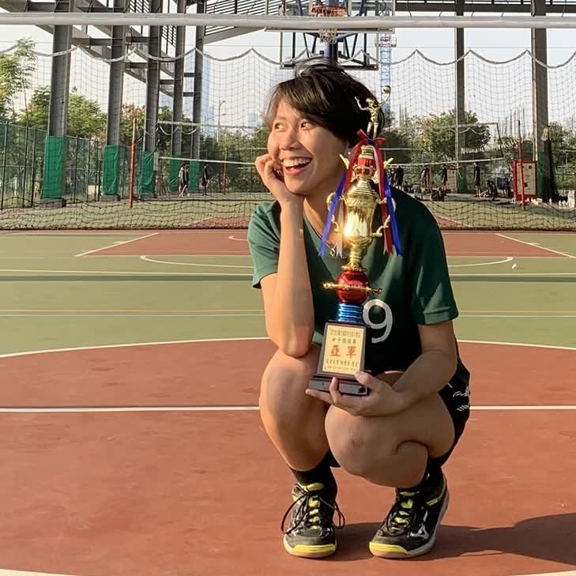
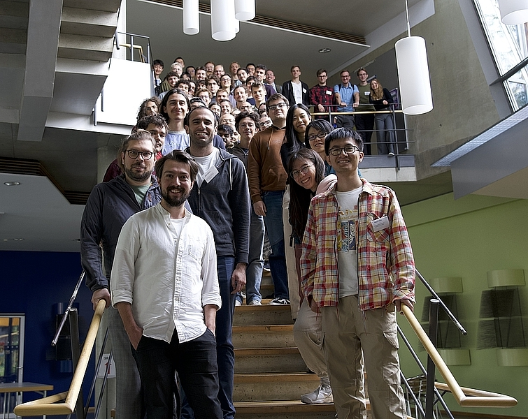
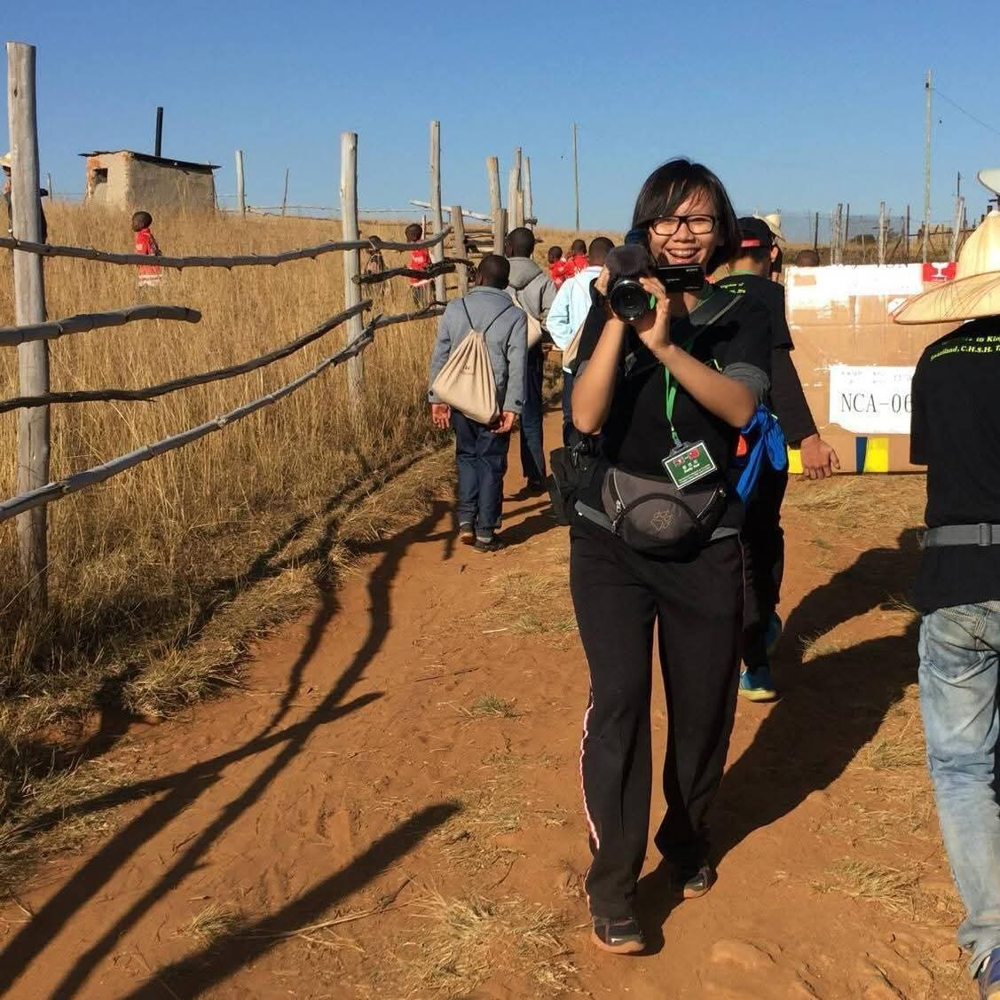

Sapere Aude! “Have courage to use your own reason!”
I'm Yi-Fang. I grew up in Changhua City, a small town in the central area of Taiwan, and got most of my physics academic training in Hsinchu, which is best known for the industry chain of semiconductor, especially the TSMC, MediaTek, etc. Apart from research in condensed matter physics, I used to play volleyball and train in gyms. In my leisure time, I also apply the idea of back-of-the-envelope physics to various subjects.

Me in a Volleyball Court, with a Trophy

Quant24 Photo at MPI-PKS

Me in Swaziland(Eswatini)